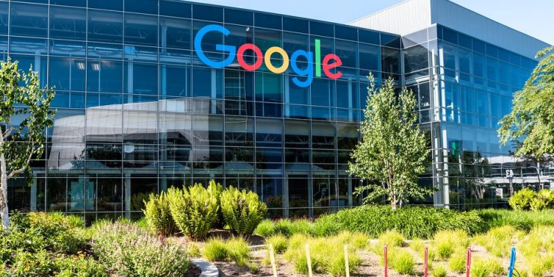

!Hola¡
Soy Henry Venancio Alcedo, estudiante de la escuela académica profesional de Ciencias Administrativas
Estas son mis:
Habilidades:
- Trabajo en equipo
- Toma de decsiiones
- Manejo de excel
- Programación básico

Tareas
Couching Ontológico

Sabemos que es un tipo de couching, pero esto está enfocado principalemnte en el "ser", sus emociones, su lenguaje, y su forma de relacionarse con el mundo. Por lo cual presento estas empresas que aplican este tipo de couching:
- Google: Implementa coaching ejecutivo para sus líderes, buscando mejorar su desempeño y liderazgo.
- Coca-Cola FEMSA: Utiliza el coaching ontológico para mejorar la dinámica de equipos y la comuicación interna.
- BBVA: Ofrece programas de coaching de liderazgo para sus empleados en el setor financiero.
- Microsoft: Fomenta el desarrollo personal y profesional de sus empleados
Empresa en el cual me gustaría trabajar
Me desarrolla profesionalmente ya que ofrece diversas carreras y oportunidades de crecimiento dentro de la empresa permitiendo a sus colaboradores expandir sus habilidades y conocimientos. También presenta un buen clima laboral, trabajo en equipo y la colaboración.
Mario Alonso Puig: las 9 inteligencias
- Inteligencia lógico-matemática
- Inteligencia Lingüistico-verbal
- Inteligencia espacial
- Inteligencia corporal-kinestésica
- Inteligencia musical
- Inteligencia interpersonal
- Inteligencia intrapersonal
- Inteligencia existencial
- Inteligencia nauralista
Empresas que hacen Coaching
- Google: Utiliza el coaching para el desarrollo personal y profesional de sus empleados, además de implementar programas como "Googler-to-Googler" .
- IBM: Tiene un sólido programa de coachinf enfocado en el desarrollo del liderazgo. .
- BCP: Implementa el coaching en áreas como la metodología ágil, adicionalmente el banco utiliza herramientas como el "Hake Coaching" para fortalecer la unión y el trabajo en quipo entre sus colaboradores.
- Alicorp: Utiliza el coaching como parte de sus estrategia de desarrollo de talento y mejora del desempeño.(Ver más)
Empresas que implementan el trabajo en equipo
- Procter & Gamble (P&G): Ha implentado programas de desarrollo profesional y actividades de team building para fortalecer la colaboración y la comunicación entre sus empleados, según un blog de Media Source.
- Starbucks: Fomenta un ambiente de trabajo colaborativo a través de la creación de espacios de reunión y la promoción de la comunicación abierta entre sus empleados, según un blog de Media Source.
- Catalyst Perú: Ofrecen actividades diseñadas para mejorar la comunicación, la colaboración y el trabajo en equipo, tanto de forma presencial como remota.
- Intercorp: Implementan acciones para fomentar la diversidad en sus equipos de trabajo, desde la diversidad en los paneles de entrevista